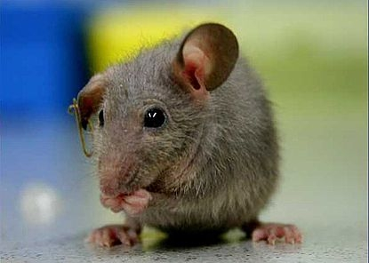

How many mice do I need?
Lead Author: Erin Esp

Jill is a researcher in comparative pathology. She is currently planning an experiment to measure the efficacy of a particular treatment. While attending a drop in biostatistics workshop, Jill asks the lead biostatistician the following question. "How many mice do I need per treatment group in order to detect treatment effects?" The following is an outline of the steps necessary to answer this question.
Perhaps one of the most crucial things when determining sample size is previous knowledge. In most sample size calculations it is necessary to have an idea of the smallest difference that the researcher would like to detect. In order to determine what this difference should be we need some previous knowledge perhaps from earlier studies or from a pilot study.
First we need to determine what kind of a response/outcome variable, you are measuring. Is it,